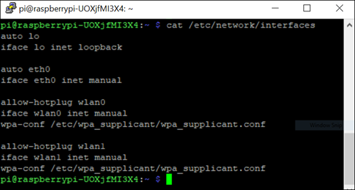

You can resolve network connectivity issues by inspecting and editing the IP configuration of the Raspberry Pi™ Ethernet port.
You may need to reconfigure the IP settings if your board:
Has unknown IP settings
Is unreachable using a network connection
Is being moved to a network or direct Ethernet connection that uses static IP settings
Is being moved from a network that used static IP settings to one that uses DHCP services
There are several conditions under which networks use DHCP or static IP settings:
Use DHCP services — If your board is connected to a network with DHCP services, such as an office LAN or a home network connected to the Internet. DHCP is a network service that automatically configures the IP settings of Ethernet devices connected to a network.
Use static IP settings — If your board is directly connected to an Ethernet port on your computer or connected to an isolated network without DHCP services.
To configure the board to use DHCP or static IP settings:
You can use a terminal window after accessing the Linux® desktop. See Access the Linux on Raspberry Pi Using Computer Peripherals.
Display the contents of the /etc/network/interfaces file.
Enter:
cat /etc/network/interfaces
If the board is configured to use DHCP services (the default
configuration), dhcp appears at the end of the
following line:
iface eth0 inet dhcp
If the board is configured to use static IP settings, static appears
at the end of the following line:
iface eth0 inet static

Create a backup of the /etc/network/interfaces file. Enter:
sudo cp /etc/network/interfaces /etc/network/interfaces.backup
If prompted, enter the root password.
Edit interfaces using a simple
editor called nano. Enter:
sudo nano /etc/network/interfaces
Edit the last word of line that starts with iface
eth0 inet.
To use DHCP services, change the line to:
iface eth0 inet dhcp
To use static IP settings, change the line to:
iface eth0 inet static
For static IP settings, add lines for address, netmask,
and gateway. For example:
iface eth0 inet static
address 192.168.1.2
netmask 255.255.255.0
gateway 192.168.1.1For static IP settings:
The value of the subnet mask must be the same for all devices on the network.
The value of the IP address must be unique for each device on the network.
For example, if the Ethernet port on your host computer has
a network mask of 255.255.255.0 and a static IP
address of 192.168.1.1, set:
netmask to use the same network
mask value, 255.255.255.0.
address to an unused IP address,
between 192.168.1.2 and 192.168.1.254.
Save the changes and exit nano:
Press Ctrl+X.
Enter Y to save the modified buffer.
For “File Name to Write: /etc/network/interfaces”, press Enter.
The nano editor confirms that it
“Wrote # lines” and returns control to the command line.
Reboot the board. In MATLAB® Command Window, enter:
h = raspberrypi
h.execute('sudo shutdown -r now')Test the IP settings by logging in to the board over a telnet session.
You can use the ifconfig command to temporarily
change the IP settings. Rebooting the board removes the ifconfig settings
and restores the /etc/network/interfaces settings.
To change the IP settings temporarily, open a Linux command
line. Enter ifconfig, the device id, a valid IP
address, netmask, and the appropriate network mask.
For example:
ifconfig eth0 192.168.45.12 netmask 255.255.255.0